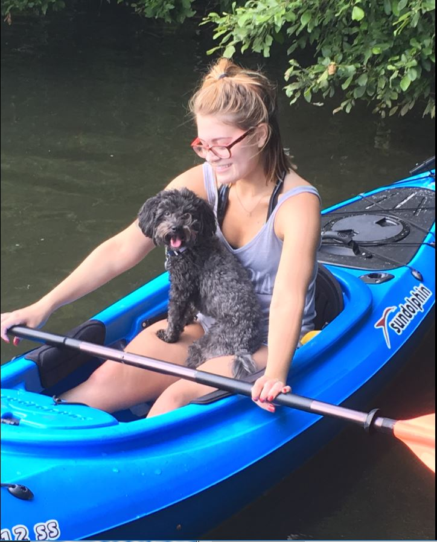
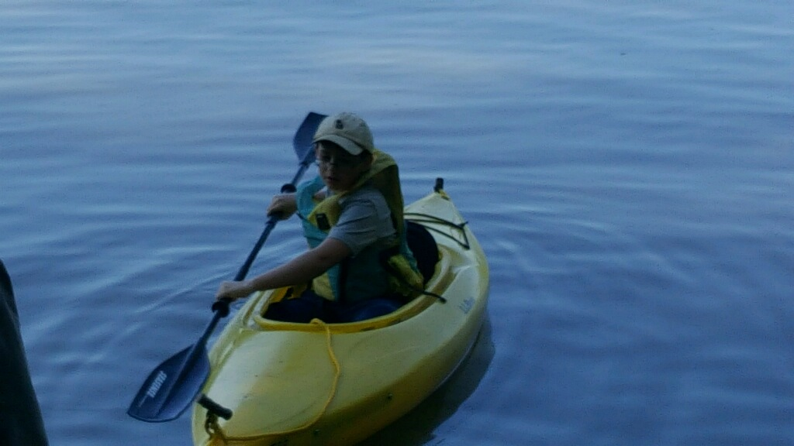
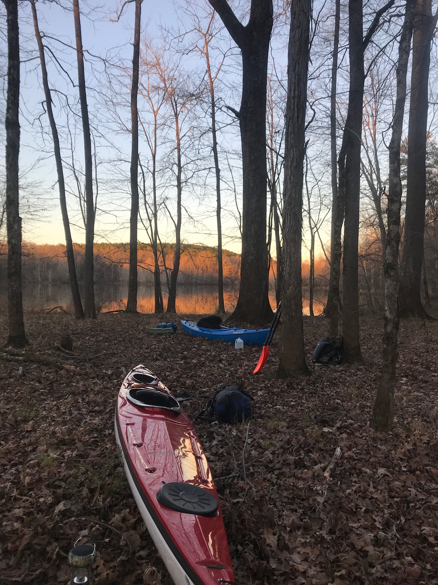
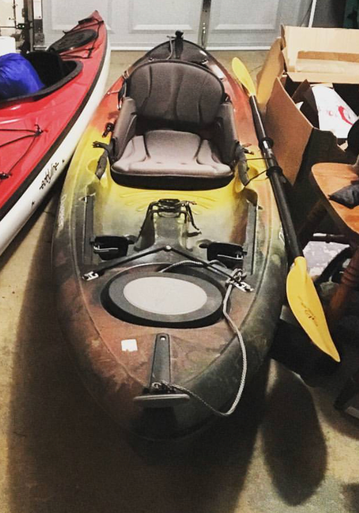

Exploring the Outdoors Through Kayaking
| Kayak | Description | Benefits | Disadvantages | |
|---|---|---|---|---|
Sit Inside Kayak | Sit-inside kayaks are the more “traditional” style kayaks. This is a versatile style of kayak and the parent group of many specialized style of kayaks. | Most sit-in kayaks have a raised lip around the cockpit (the hollow area inside the boat that the paddler sits in) which allows for a spray skirt to be used. A spray skirt seals the cockpit from any water that might inevitably splash in. This means more kayaking year round in colder water. Additionally, sit-in kayaks are generally faster and easier to maneuver in the water than their sit-on-top counterpart. | Knowing how to "roll" your kayak is a useful skill to master for most sit-in kayaks but is not necessary for sit-on kayaks. If sit-in kayaks become filled with water it is necessary to "bail" the kayak. Either by using a tool such as a pump or by getting the boat to shore to then drain the water. |  |
Whitewater Kayak | This specialized type of sit-in kayak is, just as the name suggests, best suited for white water adventures. | Small size makes the kayak easy to maneuver through whitewater rapids. The snug fit helps keep paddlers from falling out but it also creates a more intimate experience. This style of kayak can easily start to feel less like a boat and more like an extension of the paddler. | The same reasons that make the whitewater kayak easy to steer, also make it less efficient in the water. In other words, you will have to paddle harder and longer in a calm lake than you otherwise would in a traditional sit-in kayak. This is not a problem in whitewater, the environment this kayak was specifically designed for, because the fast moving water will propel you down river. |  |
Touring Kayak |
In many ways this sit-in style kayak is the antithesis of the whitewater kayak. This long boat allows for lots of storage and efficient paddling. | The touring kayak has a long, skinny shape and can be incredibly spacious. This space is often utilized as waterproof storage compartments allowing paddlers to bring enough gear and water for overnight camping trips. This design also allows for efficient paddling, the boat tracks in a straight line and glides swiftly through water. Indeed, this kayak is best suited for long overnight trips. | This kayak thrives in the ocean, lakes, large rivers, and generally flat water. It is NOT designed for running rapids or maneuvering whitewater. Some touring kayaks come with deck mounted pumps as bailing water out of the boat is necessary to prevent capsizing if the cockpit begins to fill with water. This can be an especially useful feature when kayaking far away from shore. |  |
Sit on top Kayak |
The sit on kayak does not have cockpit area that the paddler sits inside, instead paddlers simply climb on top of the kayak and float. This style of kayk is most popular in warm areas. | With this style of kayak users can easily get on and off the boat in the water. Thus, it is great for those who like to stop and go for a swim while paddling. Also, capsizing or having to bail water out of the kayak is not an issue with this style of kayak. They are designed to be self bailing and therefore do not get swamped and remain buoyant in the water. They are an excellent kayak for beginners with great stability. This stability also makes them a good boat for those who want to fish in their kayak. | The main downsides to this style of kayak are lack of efficiency and storage. It is a stable boat, but consequently not as fast in the water. Additionally the design does not lend itself to lots of dry storage space. Getting wet when paddling this style of kayak is inevitable and thus is not meant for use in cold conditions. |  |